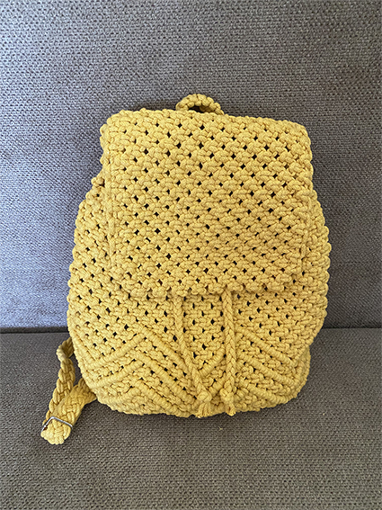
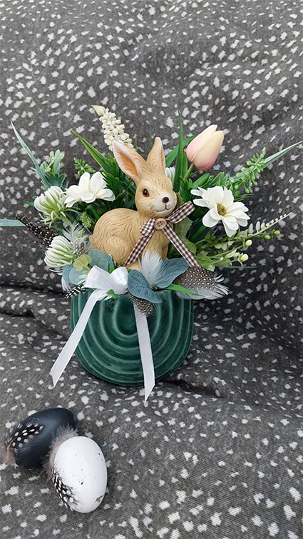
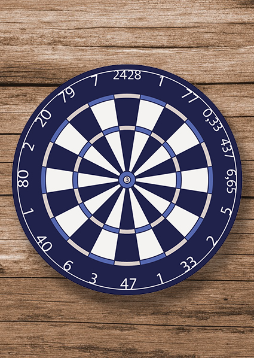
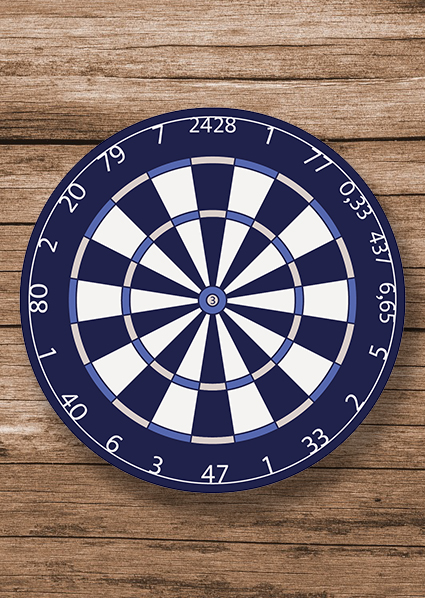

Mivel foglalkozunk?
Kézművesség
- Asztaldíszek
- Szezonális díszek
- Bögrék feliratozása
- Könyvszobrok
- Kavicsfestés
- Makramé termékek stb.
Grafika
- Arculat, logo, névjegy
- Meghívók
- Csomagolás tervezés
- Infografika
- Plakát, szórólap
- Weboldal tervezés
Legutóbbi munkáink
  
Tovább

Tovább
Kik vagyunk?
Frissen induló vállalkozás vagyunk, akik szívügyüknek tekintik az ajándékozást. Hiszünk abban, hogy a dekoratív, kreatív és egyedi dísztárgyak grafikával ötvözve örömteli pillanatokat okoznak az ajándékozottaknak.
Meglepetéseink összeállításánál ügyelünk arra, hogy a szezonális és asztali dísz funkciókon kívül termékeink a mindennapi élet hasznos kellékeivé váljanak. Ha lenne valami egyedi elképzelésed, amit szeretnél megvalósítani és meglepni vele egy szeretted, bátran fordulj hozzánk.
Grafikai tervezés, weblapkészités a másik profilunk, keress minket, ha meghívóra, szórólapra, arculat tervezésre, weboldalra van szükséged. Ma már rendkívül fontos, hogy kitűnj a tömegből egy saját honlap segítségével.
Dóri és Judit